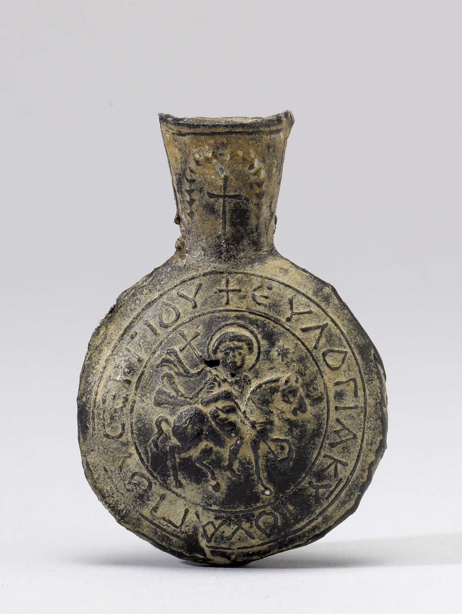

Christian Relicmania: An Introduction to the Cult of Relics
The word relic comes from the Latin reliquiae, meaning remains or remnants. In everyday language, it usually refers to something left over from the past: an old object, a surviving trace, or a material reminder of another time.
Reliquiomanía cristiana: una introducción al culto de las reliquias
La palabra reliquia viene del latín reliquiae, que significa restos o remanentes. En el lenguaje común, suele referirse a algo que queda del pasado: un objeto antiguo, un vestigio o una huella material de otra época.
Read full text
In this broad sense, all human cultures preserve relics of some kind, from family heirlooms and ancestral objects to national monuments, documents, and treasures.
Many religions have also preserved and honoured relics. Buddhism, for example, developed important traditions around the bodily remains of holy figures. In Islam, some objects associated with the Prophet Muhammad and the first caliphs have also been preserved and respected. Christianity, however, gave relics an especially central role. From Late Antiquity onward, Christian thinkers developed a theological defence of relic veneration, and relics became a major part of Christian religious life, especially during the Middle Ages.
In a specifically Christian sense, relics are the bodily remains of saints and sacred figures, such as Christ and the Virgin Mary, or objects sanctified through contact with these figures or with their remains. For centuries, Christians venerated holy relics as instruments through which faith, the intercession of the saints, and the power of God could work miracles. Relics were used in many contexts: the consecration of churches, healing rituals, exorcisms, prayers during disasters, solemn oaths, public processions, and even military ceremonies.
The Study of Relics
The modern study of Christian relics has its roots in the religious debates that divided Europe from the sixteenth century onward. Protestant reformers rejected the cult of saints and relics, together with the veneration of images, as superstitions of the Roman Church. They questioned the reliability of saints’ lives, the antiquity of Catholic traditions, and the authenticity of many relics.
Catholic scholars responded by defending these practices with historical arguments and documentary evidence. This context gave rise to major scholarly projects, such as the Bollandist Society and the Acta Sanctorum. Although these works were shaped by confessional debate, they also helped create the foundations for the historical study of saints and relics.
During the Enlightenment, relics were often dismissed as signs of superstition, fraud, or irrational belief. More modern academic approaches appeared in the twentieth century, especially among historians of religion, art, and Late Antiquity. A major shift came in the 1970s with the work of Peter Brown, who argued that the cult of saints was not simply a symptom of decline or superstition, but one of the great cultural transformations of Late Antiquity. Since then, the study of relics has expanded enormously. Scholars now examine relics as religious, social, political, artistic, and material objects.
The Origins of the Cult of Relics
Historians influenced by Protestant polemics often saw the cult of saints and relics as a survival of paganism. According to this view, relic veneration was one example of how early Christianity had been “contaminated” by non-Christian practices after the legalisation and officialisation of the Church under Constantine.
This idea had a long influence. Even today, it is common to hear that the cult of saints was simply a continuation of pagan polytheism, or that the cult of relics was just a Christian version of older magical and amuletic practices. But this explanation is too simple. Peter Brown showed that the rise of the cult of saints was better understood as a new cultural phenomenon of Late Antiquity. It had connections with older ideas and practices, but it was not merely a passive survival of pagan religion.
Robert Wiśniewski has made a similar argument for relics. In his study of the beginnings of the cult of relics, he argues that Christian relic veneration emerged above all in the second half of the fourth century. It developed from the veneration of martyrs’ tombs and from reports of miracles, especially healings and exorcisms, that were said to occur at those places.
Other scholars have added important nuances. The Christian cult of relics was new, but it did not appear in a cultural vacuum. It developed in the religious world of the late antique Mediterranean and Near East, where people already believed in sacred places, holy bodies, protective objects, and contact with divine power. The cult of heroes’ tombs in the Greco-Roman world, the veneration of biblical figures, and the use of amulets all formed part of this wider background.
The key point is balance. We should not reduce the Christian cult of relics to a simple continuation of pagan practices. But neither should we imagine that it emerged without any connection to the world around it. It was a new Christian development, shaped by older cultural expectations and by biblical traditions.
In the Acts of the Apostles, cloths that had touched Saint Paul were said to heal the sick and drive away evil spirits. This shows that ideas about holy contact, protection, and healing objects existed among Christians from a very early period. The Ark of the Covenant, the staff of Moses, and other sacred objects from the Old Testament also gave Christians powerful models for thinking about holy matter.
However, perhaps the most interesting aspect of the Christian cult of relics is that it gave rise to ideas and practices that were completely new, or at least highly unusual, in the pre-Christian ancient world. These included, for example, the theft of relics and the ritual humiliation of relics, both analysed in the studies of Patrick Geary. These practices are not only curious and fascinating; they also show how, through the study of relics, we can approach the ways in which people in the past understood the relationship between the divine and material culture, as well as the presence of the supernatural in the everyday world around them.
Basic Bibliography
- Brown, Peter. “The Rise and Function of the Holy Man in Late Antiquity.” Journal of Roman Studies 61 (1971): 80–101.
- Brown, Peter. The Cult of the Saints: Its Rise and Function in Latin Christianity. Chicago: University of Chicago Press, 1981.
- Delehaye, Hippolyte. Les origines du culte des martyrs. Brussels: Société des Bollandistes, 1912.
- Frolow, Anatole. La relique de la Vraie Croix: recherches sur le développement d’un culte. Paris: Institut français d’études byzantines, 1961.
- Geary, Patrick J. Furta Sacra: Thefts of Relics in the Central Middle Ages. Princeton: Princeton University Press, 1978. Revised edition, 1991.
- Hahn, Cynthia, and Holger A. Klein, eds. Saints and Sacred Matter: The Cult of Relics in Byzantium and Beyond. Washington, DC: Dumbarton Oaks Research Library and Collection, 2015.
- Smith, Julia M. H. “Portable Christianity: Relics in the Medieval West, c. 700–1200.” Proceedings of the British Academy 181 (2012): 143–167.
- Wiśniewski, Robert. The Beginnings of the Cult of Relics. Oxford: Oxford University Press, 2019.
- Wortley, John. Studies on the Cult of Relics in Byzantium up to 1204. Farnham, Surrey: Ashgate Variorum, 2009.
© Joaquín Serrano del Pozo, 2026. All rights reserved.
En este sentido amplio, todas las culturas humanas conservan reliquias de algún tipo, desde recuerdos familiares y objetos ancestrales hasta monumentos, documentos y tesoros nacionales.
Muchas religiones también han preservado y honrado reliquias. El budismo, por ejemplo, desarrolló importantes tradiciones en torno a los restos corporales de figuras santas. En el islam, algunos objetos asociados con el profeta Mahoma y los primeros califas también han sido conservados y respetados. Sin embargo, el cristianismo dio a las reliquias un lugar especialmente central. Desde la Antigüedad Tardía, los pensadores cristianos desarrollaron una defensa teológica de su veneración, y las reliquias se convirtieron en una parte fundamental de la vida religiosa cristiana, sobre todo durante la Edad Media.
En un sentido específicamente cristiano, las reliquias son los restos corporales de los santos y de figuras sagradas, como Cristo y la Virgen María, o bien objetos santificados por el contacto con estas figuras o con sus restos. Durante siglos, los cristianos veneraron las santas reliquias como instrumentos a través de los cuales la fe, la intercesión de los santos y el poder de Dios podían obrar milagros. Las reliquias fueron usadas en muchos contextos: la consagración de iglesias, ritos de sanación, exorcismos, plegarias durante desastres, juramentos solemnes, procesiones públicas e incluso ceremonias militares.
El estudio de las reliquias
El estudio moderno de las reliquias cristianas tiene sus raíces en los debates religiosos que dividieron Europa desde el siglo XVI en adelante. Los reformadores protestantes rechazaron el culto de los santos y las reliquias, junto con la veneración de imágenes, como supersticiones de la Iglesia romana. También cuestionaron la confiabilidad de las vidas de santos, la antigüedad de las tradiciones católicas y la autenticidad de muchas reliquias.
Los estudiosos católicos respondieron defendiendo estas prácticas mediante argumentos históricos y evidencia documental. En este contexto surgieron grandes proyectos eruditos, como la Sociedad de los Bolandistas y los Acta Sanctorum. Aunque estas obras estaban marcadas por el debate confesional, también ayudaron a crear las bases del estudio histórico de los santos y las reliquias.
Durante la Ilustración, las reliquias fueron muchas veces descartadas como señales de superstición, fraude o creencias irracionales. Los enfoques académicos más modernos aparecieron en el siglo XX, sobre todo entre historiadores de la religión, del arte y de la Antigüedad Tardía. Un cambio fundamental se produjo en la década de 1970 con los trabajos de Peter Brown, quien sostuvo que el culto de los santos no debía entenderse simplemente como decadencia o superstición, sino como una de las grandes transformaciones culturales de la Antigüedad Tardía. Desde entonces, el estudio de las reliquias se ha expandido enormemente. Hoy los académicos las estudian como objetos religiosos, sociales, políticos, artísticos y materiales.
Los orígenes del culto a las reliquias
La historiografía influida por las polémicas protestantes solía ver el culto a los santos y a las reliquias como una supervivencia del paganismo. Según esta interpretación, la veneración de reliquias sería un ejemplo de cómo el cristianismo primitivo fue “contaminado” por prácticas no cristianas después de la legalización y oficialización de la Iglesia bajo Constantino.
Esta idea tuvo una larga influencia. Incluso hoy es común escuchar que el culto a los santos fue simplemente una continuación del politeísmo pagano, o que el culto a las reliquias fue apenas una versión cristiana de antiguas prácticas mágicas y amuléticas. Pero esta explicación es demasiado simple. Peter Brown mostró que el desarrollo del culto de los santos se entiende mejor como un fenómeno cultural nuevo de la Antigüedad Tardía. Tuvo conexiones con ideas y prácticas anteriores, pero no fue una simple supervivencia pasiva del paganismo.
Robert Wiśniewski ha desarrollado un argumento parecido para las reliquias. En su estudio sobre los inicios del culto a las reliquias, sostiene que la veneración cristiana de estos objetos surgió sobre todo en la segunda mitad del siglo IV. Se desarrolló a partir de la veneración de las tumbas de los mártires y de los relatos de milagros, especialmente curaciones y exorcismos, que supuestamente ocurrían en esos lugares.
Otros académicos han agregado matices importantes. El culto cristiano a las reliquias fue nuevo, pero no apareció en un vacío cultural. Se desarrolló dentro del mundo religioso del Mediterráneo y el Medio Oriente tardoantiguos, donde ya existían creencias sobre lugares sagrados, cuerpos santos, objetos protectores y contacto con el poder divino. El culto a las tumbas de los héroes en el mundo grecorromano, la veneración de figuras bíblicas y el uso de amuletos formaban parte de ese trasfondo más amplio.
El punto clave es mantener el equilibrio. No conviene reducir el culto cristiano a las reliquias a una simple continuación de prácticas paganas. Pero tampoco hay que imaginar que surgió sin ninguna conexión con el mundo que lo rodeaba. Fue un desarrollo cristiano nuevo, formado dentro de expectativas culturales más antiguas y también dentro de tradiciones bíblicas.
En los Hechos de los Apóstoles, se dice que los paños que habían tocado a san Pablo sanaban a los enfermos y expulsaban espíritus malignos. Esto muestra que las ideas sobre contacto santo, protección y objetos sanadores existían entre los cristianos desde una época muy temprana. El Arca de la Alianza, el bastón de Moisés y otros objetos sagrados del Antiguo Testamento también ofrecieron modelos poderosos para pensar la materia santa.
Sin embargo, quizás lo más interesante del culto cristiano a las reliquias es que dio origen a ideas y prácticas completamente novedosas, o al menos muy poco comunes en el mundo antiguo precristiano. Entre ellas se encuentran, por ejemplo, el robo de reliquias o los ritos de humillación de reliquias, analizados en los estudios de Patrick Geary. Estas prácticas no sólo son curiosas y fascinantes; también muestran cómo, a través del estudio de las reliquias, podemos acercarnos a la forma en que la gente del pasado entendía la relación entre lo divino y la cultura material, así como la presencia de lo sobrenatural en el mundo cotidiano que la rodeaba.
Bibliografía básica
- Brown, Peter. “The Rise and Function of the Holy Man in Late Antiquity.” Journal of Roman Studies 61 (1971): 80–101.
- Brown, Peter. The Cult of the Saints: Its Rise and Function in Latin Christianity. Chicago: University of Chicago Press, 1981.
- Delehaye, Hippolyte. Les origines du culte des martyrs. Brussels: Société des Bollandistes, 1912.
- Frolow, Anatole. La relique de la Vraie Croix: recherches sur le développement d’un culte. Paris: Institut français d’études byzantines, 1961.
- Geary, Patrick J. Furta Sacra: Thefts of Relics in the Central Middle Ages. Princeton: Princeton University Press, 1978. Edición revisada, 1991.
- Hahn, Cynthia, and Holger A. Klein, eds. Saints and Sacred Matter: The Cult of Relics in Byzantium and Beyond. Washington, DC: Dumbarton Oaks Research Library and Collection, 2015.
- Smith, Julia M. H. “Portable Christianity: Relics in the Medieval West, c. 700–1200.” Proceedings of the British Academy 181 (2012): 143–167.
- Wiśniewski, Robert. The Beginnings of the Cult of Relics. Oxford: Oxford University Press, 2019.
- Wortley, John. Studies on the Cult of Relics in Byzantium up to 1204. Farnham, Surrey: Ashgate Variorum, 2009.
© Joaquín Serrano del Pozo, 2026. Todos los derechos reservados.